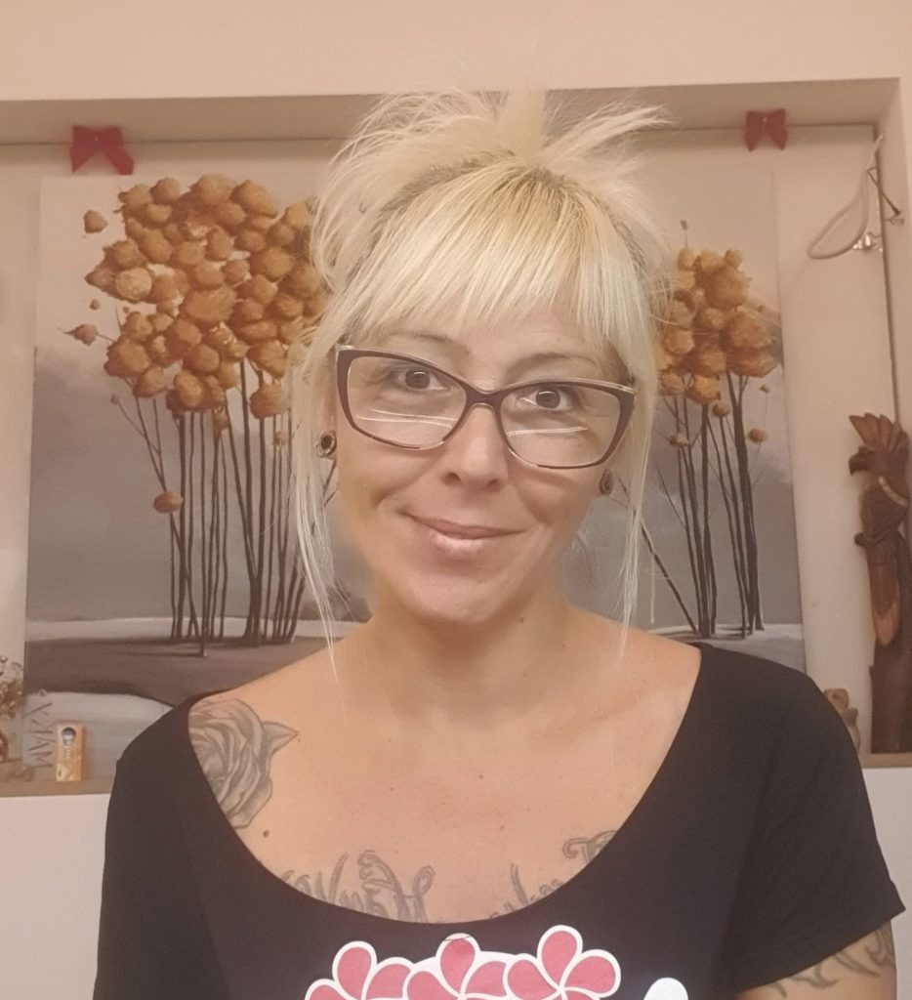

Art in the form of costume design, tattooing, and painting has permeated my entire life. But painting is something where I find myself the most, in which I invest most of my time because it makes me happy and fulfilled. Through various techniques, materials, styles, with acrylic and canvases of various sizes, I manage to show my vision of the world…
Inspiration comes to me from everywhere, in the form of a tree, a leaf, a bird, through people and all the way to our emotions and dreams. The way I see it all makes me the artist I am. I live in the belief that our world is just one of many and through my paintings I try to show the portals to them and at least a part of those worlds.
MAKY .
Inspiration comes to me from everywhere, in the form of a tree, a leaf, a bird, through people and all the way to our emotions and dreams. The way I see it all makes me the artist I am. I live in the belief that our world is just one of many and through my paintings I try to show the portals to them and at least a part of those worlds.
MAKY .